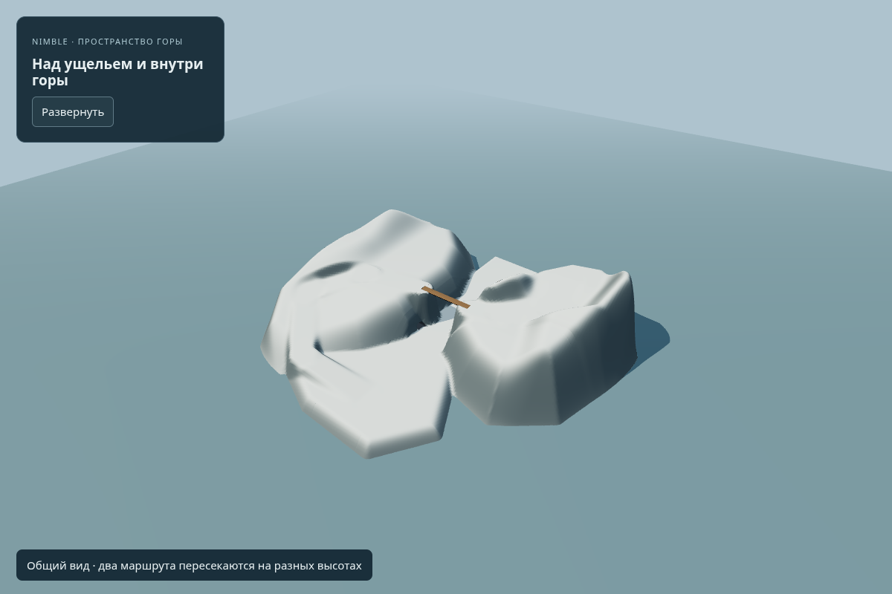

Мост над ущельем. Пещера внутри горы.
Кадры рабочего опыта: нижний и верхний маршруты пересекаются, а в склон можно войти без загрузки другой локации. Над потолком пещеры сохранена поверхность горы.
Техническая проверка пройдена. Художественно горы ещё не приняты: верхний район пустой, силуэт местами похож на обрезанные платформы, пещера — простой прямой тоннель. Это проверка возможностей собственного носителя геометрии.
Пещера в той же горе
Два пути на разных высотах
Крупная форма
Один исследовательский фрагмент
Изменяемые параметры; структура опыта прежняя Что проверено
Пять seed с обычной ходьбой по мостовому фрагменту; 52 независимые проверки на шести других seed. Вход и возвращение из пещеры, сохранность старых путей, потолок и стены проверены отдельно. В браузере — десять последовательных отрезков без перестановки персонажа между ними, без сетевых загрузок во время ходьбы и без ошибок.
Оригинальные горные формы, скалы и основная игра сохранены. Новый планировщик районов ещё не превращён в общий генератор этих объёмов.
Сводка · Браузерный журнал · Сохранность исходной сценыТемы для твоих идей
Самый полезный вклад — ситуации, которые хочется пережить. Необязательно придумывать техническое решение или отвечать на все пункты.
- 1. Зачем идти наверх
Причины подъёма помимо лута: разведка, убежище, проход на другую сторону, поиск пропавшего места.
- 2. Самостоятельные места
Характер котловины, лесного плеча, ущелья или уступа. Что там хочется делать и запоминать.
- 3. Последовательность открытия
Будущая цель видна заранее; вход приходится искать; сверху узнаётся пройденное место.
- 4. Признаки доступности
По чему понять: здесь есть подход, нужен обход или склон закрыт. Как избежать ложных обещаний.
- 5. Хорошие тупики
Награда, знание, убежище или история, которые оправдывают обратный путь.
- 6. Пещеры и берлоги
Разница безопасного навеса, укрытия от метели и занятой берлоги; заметные снаружи признаки.
- 7. Выбор пути
Короткий открытый гребень против длинного защищённого ущелья; усилия, опасность и возможность отступить.
- 8. Возвращение
Новая погода, груз, открытый спуск или замеченное укрытие меняют знакомую дорогу.
- 9. Характер высот
Ветер, звуки, растительность, следы, видимость и защищённость делают районы различными.
- 10. Масштаб и плотность
Ощущение расстояний между открытиями; чередование тесноты, простора и самостоятельных мест.
Пример: иду по ущелью → замечаю наверху строение → прямого подъёма нет → нахожу обход через лесную котловину → выхожу к строению → сверху узнаю место, откуда начал.